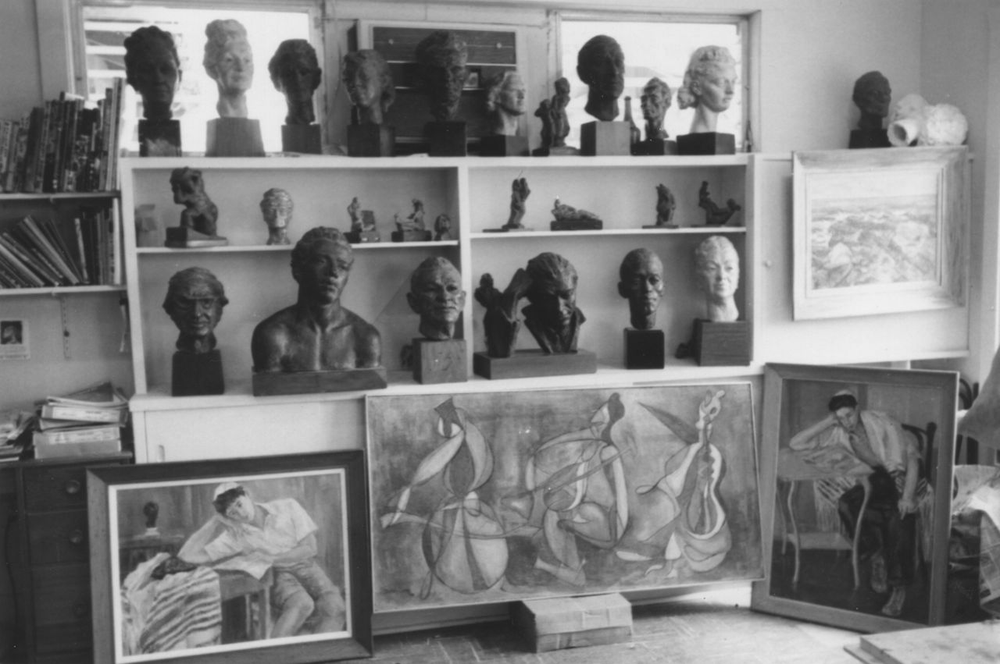

Zena Posever
Artist and Activist, 1911-2012
was a master sculptress and painter whose portrait commissions can be found in the collections of the National Portrait Gallery, Wolfsonian Museum, and Penn Art Academy
STORIES

Art Studio, Miami Beach 1965
Contact Us